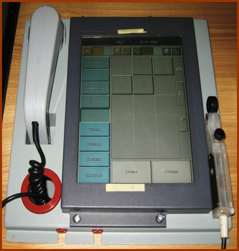
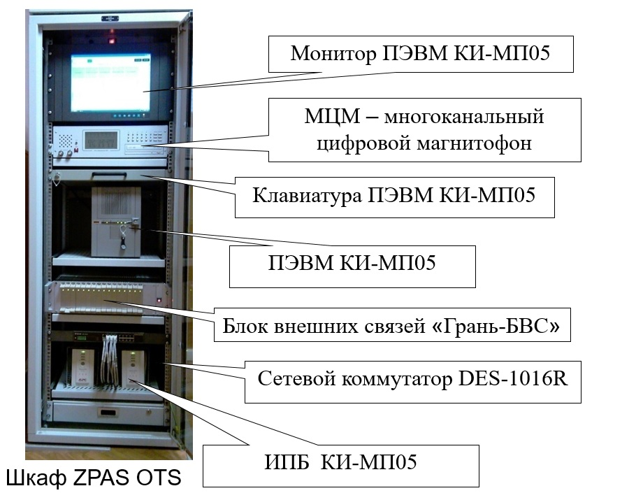
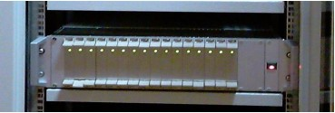
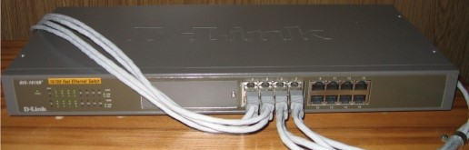

1. Описание и работа
1.1 Общие требования
Комплекс аппаратуры оперативно-командной связи предназначен для предоставления операторам КСА телефонной и громкоговорящей связи по открытым каналам дальней связи в радиальной сети. КА ОКС обеспечивает организацию связи в режимах прямого доступа, совещания, циркуляра с возможностью регистрации переговоров.
1.2 Состав КА ОКС
Пульт связи оператора «Грань-ПС» – предназначен для обеспечения оператору рабочего места КСА телефонной и громкоговорящей связи с абонентами.
Пульт связи оператора "Грань-ПС" представлен на рисунке 1.1.

{kind=link}
Рисунок 1.1 - Пульты связи оператора «Грань-ПС»
Шкаф ZPAS OTS состав которого показан на рисунке 1.2.
{kind=link}
Рисунок 1.2 - Состав шкафа ZPAS OTS
1.3 Технические характеристики
Количество пультов связи оператора «Грань-ПС» составляет от 3
до 7 в зависимости от варианта исполнения
КА ОКС.
Максимальное количество абонентов, подключаемых к
одному пульту связи может быть до 30 единиц.
Удаление
пультов связи от коммутационного оборудования
КА ОКС, расположенного в шкафу, должно быть не более 50 м.
Пропускная способность тракта локальной вычислительной
сети (ЛВС)
Ethernet составляет не более 100 Мбит/с.
КА ОКС
может работать:
• по стандартным телефонным каналам
связи ТЧ (ГОСТ
21655–87) в двухпроводном и четырехпроводном окончании;
• по импульсным каналам (стык C1-ФЛ-БИ ГОСТ 27232–87).
КА ОКС
обеспечивает сопряжение:
• с аппаратурой П-330;
•
с аппаратурой АКОС-1М (блок БКДС-М1);
• с телефонными
аппаратами в режиме местная батарея (МБ), центральная батарея (ЦБ);
• с телефонными ручными коммутаторами;
• с
АТС при
использовании импульсного и тонового способа набора номера.
Количество абонентов, подключаемых к
КА ОКС, определяется емкостью блока внешних связей «Грань-БВС» и составляет 16 абонентов, работающих по любому из
интерфейсов:
• четырехпроводное окончание;
•
двухпроводное окончание;
• работа с коммутатором и
АТС.
Напряжение электропитания
КА ОКС
осуществляется от однофазной сети напряжением 50 Гц. 220 В.
Мощность, потребляемая от сети, составляет не более 1
000 Вт.
КА ОКС предназначен для непрерывной круглосуточной работы при температуре окружающего воздуха в пределах от 5 до 40 °С и относительной влажности воздуха 98 % (при температуре 25 °С).
Количество абонентов, подключаемых к
КА ОКС, определяется емкостью блока внешних связей Грань
БВС и составляет 16
абонентов, работающих по любому из интерфейсов:
-
четырехпроводное окончание;
- двухпроводное окончание;
- работа с коммутатором и
АТС.
1.4 Устройство и работа КА ОКС
В основу структурной схемы
КА ОКС
положен принцип программно-аппаратной реализации
функциональных задач. Функционально
КА ОКС
состоит из пультов связи Грань-ПС, расположенных на рабочих
местах
КСА, и
блока внешних связей Грань-БВС, связанных между собой
ЛВС
посредством сетевого коммутатора DES-1016R+. Принцип работы
КА ОКС
основан на передаче пакетов данных (оцифрованная речевая
информация и команды управления) по
ЛВС с
использованием технологии асинхронной передачи
АТМ
(Asynchronous Transfer Mode).
К
ЛВС
подключены все абоненты системы связи.
{kind=link}
Рисунок 1.3 - Структурная схема КА ОКС

{kind=link}
Рисунок 1.4 - Блок внешних связей «Грань-БВС

{kind=link}
Рисунок 1.5 - Сетевой коммутатор DES-1016R
Внешние абоненты включаются в сеть через универсальные
контроллеры интерфейсов Грань
КИ, расположенные
в блоке Грань БВС.
Основным элементом
КА ОКС
является
АТМ –
маршрутизатор (сетевой коммутатор DES-1016R+), к которому
подключены процессоры пультов связи и блока Грань-БВС.
Функцией коммутатора является прием пакета данных от одного
порта (например, пульта связи) и передача его, в зависимости
от адреса абонента и установленной конфигурации сети, в другой
порт (соответствующий контроллер
КИ).
{kind=link}
Рисунок 1.6 - Универсальные контроллеры интерфейсов «Грань-КИ
Конфигурирование системы оперативно-командной связи
КСА
осуществляется централизованно, с помощью исполняемого модуля
VCM.EXE программы администратора сети, установленной на ПЭВМ
КИ-МП. Там же отображается текущее состояние системы
ОКС.
Функцией коммутатора является прием пакета данных от
одного порта (например, пульта связи) и передача его, в
зависимости от адреса абонента и установленной конфигурации
сети, в другой порт (соответствующий контроллер
КИ).
Конфигурирование системы оперативно-командной связи
КСА
осуществляется централизованно, с помощью исполняемого модуля
VCM.EXE программы администратора сети, установленной на
ПЭВМ
КИ-МП05. Там же отображается текущее состояние системы
ОКС.
Все
манипуляции по настройке пультов связи «Грань-ПС», включая
оперативные регулировки, производятся с помощью исполняемого
модуля VCC.EXE программы оператора пульта, которая установлена
на каждом пульте «Грань-ПС.
Все функции по установлению соединения и оцифровке речевой
информации выполняются контроллером интерфейсов «Грань-КИ», представляющим собой индивидуальный процессор оконечного
оборудования. Каждый контроллер «Грань-КИ» поддерживает любой из интерфейсов:
• четырехпроводное
окончание стыка С1-ТЧ и
С1-ФЛ-БИ;
• двухпроводное окончание стыка С1-ТЧ;
• двухпроводное окончание при работе с ручным
коммутатором.
Тип интерфейса устанавливается в зависимости от конфигурации сети ОКС КСА. Блок внешних связей «Грань-БВС», в который установлены контроллеры «Грань-КИ» (16 ед.), выполняет функции маршрутизации информации между пультами и интерфейсным оборудованием, а также функции по сопряжению с сетью передачи данных.
КА ОКС
имеет возможность сопряжения со следующими типами линий
каналов связи:
1) стандартными каналами
ТЧ с двухпроводным и
четырехпроводным окончанием, образованными аналоговыми
системами уплотнения по кабельным и радиорелейным линиям
связи;
2) стандартными цифровыми каналами с применением
стандартных методов сжатия сигналов;
3) с аппаратурой
АКОС-1М (блок БКДС-М);
4) двухпроводными и
четырехпроводными физическими линиями;
5) двухпроводным
телефонным оборудованием в режимах
МБ,
ЦБ;
6)
телефонным оборудованием с индукторным вызовом;
7)
двухпроводными абонентскими линиями
АТС с
импульсным и частотным набором номера.
Источник бесперебойного питания обеспечивает гарантированное
электропитание блоку «Грань-БВС», системному блоку
ПЭВМ
КИ-МП05 и коммутатору DES-1016R. При прерывании основного
напряжения на время более 20 мс источник
ИБП
обеспечивает автономную работу
КА ОКС
гарантированным напряжением 220В.
Конструктивно
системный блок
ПЭВМ
КИ-МП05, блок «Грань-БВС», коммутатор DES-1016R, источник
ИБП,
видеомонитор, клавиатура и многоканальный цифровой магнитофон
(МЦМ)
размещены в шкафу напольного исполнения типа ZPAS OTS, к
которому подключены пульты «Грань-ПС», расположенные на
рабочих местах
КСА.
Внешние кабели подключаются к безвинтовым соединителям типа
WAGO, размешенным на задней стенке блока «Грань-БВС».
Устройство и работа пульта связи «Грань-ПС»
Пульт связи предназначен для обеспечения оператору рабочего
места
КСА
телефонной и громкоговорящей связи с абонентами.
Этот
доступ осуществляется при помощи сенсорной панели пульта,
подключенной к компьютеру, работающему под управлением
операционной системы Windows XP.
Конструктивно пульт
связи представляет собой моноблок настольного типа, в котором
размещены:
ПЭВМ, сенсорная панель с диагональю экрана 10,4",
громкоговоритель, микротелефонная трубка, головная гарнитура.
Для работы пульта не требуется подключения
ПЭВМ
клавиатуры и манипулятора типа «мышь».
ПО, установленное
в пульте «Грань-ПС», состоит из программного модуля VCC.EXE
«Рабочее место оператора связи», обеспечивающего доступ
оператора к каналам и настройку пультов.
Для сетевой
поддержки в состав пульта входит сетевая плата. Каждый пульт
может быть подключен к сетевому коммутатору посредством кабеля
с витыми парами типа FTP длиной до 50 м
Преобразование
речевой информации в цифровые данные и обратно производится
звуковой платой, входящей в пульт «Грань-ПС».
Включение/отключение электропитания пульта «Грань-ПС»
производится на лицевой панели пульта.
Устройство и работа сетевого коммутатора
Сетевой коммутатор DES-1016R (см. рис. 1.6) представляет собой
электронное изделие на основе скоростного процессора, со
встроенным собственным
ПО и не требующее
конфигурирования в процессе работы.
16- портовый
коммутатор обеспечивает сетевую среду Fast Ethernet,
связывающую абонентов. К нему подключаются все пульты
«Грань-ПС» (до 7 пультов), блок внешних связей «Грань-БВС» и системный блок
ПЭВМ
КИ-МП05 посредством кабелей FTP категории 5. Все подключения
выполняются на лицевой панели коммутатора. Возле каждого
разъема, используемого для подключения, имеются
светоиндикаторы для отображения следующих ситуаций:
•
отсутствует связь с подключенным устройством;
• идет
обмен данными между сетевым коммутатором и подключенным к
данному порту устройством.
Устройство и работа контроллеров интерфейсов «Грань-КИ»
Контроллеры «Грань-КИ» (см. рис. 1.7) предназначены для преобразования аналоговых
сигналов, ступающих с линии, в цифровую форму и передачи
цифровых данных в конверторы блока «Грань-БВС», а также обратного преобразования оцифрованных речевых
данных от пультов связи в аналоговый вид.
Контроллер
«Грань-КИ»
построен на основе микропроцессора, что позволило реализовать
в самом контроллере все специфичные функции для каждого вида
внешней связи.
Каждый контроллер реализует любой из нижеперечисленных
интерфейсов:
1) «канал» (четырехпроводное окончание) –
для подключения стандартных каналов
ТЧ, образованных
аналоговыми системами передачи, для подключения импульсных
каналов по стыку С1-ФЛ-БИ и для подключения аппаратуры АКОС-1М
(блок БКДС-М);
2) «коммутатор» (двухпроводное окончание)
– для подключения канала к ручному коммутатору;
3)
«телефонная линия» (двухпроводное окончание) – для подключения
канала к телефонному оборудованию с индукторным вызовом и
питанием типа МБ.
Выбор необходимого типа интерфейса определяется при
конфигурировании связи
КСА с
помощью
ПО администратора
ПЭВМ
КИ-МП05 и с помощью джамперов (перемычек) на плате «Грань-КИ».
Конструктивно Грань-КИ
представляет собой плату с электронными компонентами,
установленную в кросс-панель блока внешних связей «Грань-БВС» и зафиксированную стопорными винтами. На лицевой панели
имеются индикаторы для отображения текущего состояния
контроллера:
1) котроллер подключен к конвертеру блока
внешних связей Грань-БВС
(оранжевое свечение);
2) контроллер выполняет передачу
данных (зеленое свечение);
3) возникла ошибка при работе
контроллера (красное свечение).
Устройство и работа блока внешних связей «Грань-БВС»
Блок внешних связей «Грань-БВС» (см. рис.5) обеспечивает сопряжение пультов связи «Грань-ПС», подключенных непосредственно к ЛВС, с внешними каналами связи и оборудованием проводной связи.
Блок «Грань-БВС»
имеет возможность сопряжения:
1) со стандартными
каналами тональной частоты в двухпроводном и четырехпроводном
окончании, образованными аналоговыми системами передачи по
кабельным и радиорелейным линиям;
2) с цифровыми
каналами по стыку С1-ФЛ-БИ (ГОСТ 27232–87);
3) с
аппаратурой АКОС-1М (блок БКДС-М);
4) с телефонным
оборудованием с питанием от местной батареи и индукторным
вызовом напряжением 80 В, частотой 50 Гц;
5) с
двухпроводными абонентскими линиями
АТС с
импульсным и частотным набором.
Функционально «Грань-БВС» состоит из контроллеров интерфейсов «Грань-КИ» (до 16 ед.), микропрограммных контроллеров, кроссового
оборудования и источников питания.
Конструктивно блок
«Грань-БВС»
представляет собой блок (ГОСТ
28601.1 и стандарт
МЭК
297-1) для размещения в телекоммуникационном шкафу. На
передней панели блока «Грань-БВС» расположены 16 слотов для установки контроллеров
интерфейсов «Грань-КИ». На задней панели размещены разъемы для подключения внешних
кабелей, кабеля
ЛВС (Х4) и
электропитания (Х2).
Устройство и работа ПЭВМ КИ-МП05
ПЭВМ
состоит из следующих частей:
• блок системный, корпус
IPC-6908;
• видеомонитор FPM-3150 типа LCD с размером
экрана15";
• клавиатура KBD-6312, 105 клавишная, со
встроенным указательным устройством (сенсорная панель).
Клавиатура монтируется в консоль шкафа.
В состав
ПЭВМ
входит лицензионное
ПО, система
WINDOWS ХР и исполняемый модуль программы администратора сети
ОКС – VCM.EXE,
предназначенный для конфигурирования системы. Характеристики и
параметры системного блока:
• процессор – Intel Pentium
IV, частота 3,06 ГГц;
• емкость
ОЗУ –
256 Мбайт;
• емкость КЭШ – 512 Кбайт;
• емкость
жесткого диска – 40 Гбайт.
В составе ЗИП КА ОКС находится накопитель CDR-USB, предназначенный для установки программного модуля VCM.EXE с внешнего носителя.
Устройство и работа МЦМ ЭТ
МЦМ ЭТ состоит из цифрового магнитофона и устройства входного коммутационного (УВК). Пульты связи ПС №1...ПС №7 подключены к УВК, которое соединяется с входным разъемом магнитофона.
Входящие и исходящие переговоры с каждого пульта записываются
на один канал магнитофона.Включение канала на запись
производится с клавиатуры, расположенной на лицевой стороне
МЦМ ЭТ.
В режиме записи магнитофон находится в состоянии
ожидания до тех пор, пока уровень входного сигнала не превысит
0,05 В. Вместе с входной информацией пишутся текущие время и
дата. Запись производится на жесткий диск магнитофона емкостью
– 40 Гбайт. При переполнении диска, поступившая информация
записывается на место первой записи, с потерей информации.
Воспроизведение, ранее записанной информации, происходит
через встроенный динамик без прерывания режима записи и
транслируется на внешний разъем. Допускается воспроизведение
одновременно двух каналов.
Архивное хранение, ранее
записанной информации, осуществляется на съемное устройство
архивного хранения TR-5 емкостью 10 Мбайт (из
ЗИП
МЦМ ЭТ).
Все управление магнитофоном осуществляется с блока клавиатуры
магнитофона. Режим работы, номера активных каналов, текущее
время и дата отображаются на индикаторе.